目次
Learning to Drive from a World Model
Mitchell Goff、Greg Hogan、George Hotz、Armand du Parc Locmaria、Kacper Raczy、Harald Schäfer、Adeeb Shihadeh、Weixing Zhang、Yassine Yousfi
comma.ai（autonomy@comma.ai）
arXiv:2504.19077v1 [cs.CV]、2025年4月27日
翻訳について：原文 PDF は
45_Learning_to_Drive_from_a_World_Model_2504.19077.pdf（全 10 ページ）。本文、図の説明、図中ラベル、表、脚注、付録を訳出し、論文タイトルと参考文献は原文のまま掲載。図は原図を掲載し、英語ラベルの日本語訳を併記した。数式・数値・引用番号・コードの識別子は原文を維持。原文の記述に関する補足は「訳注」と明示し、本文と区別している。
要旨
ほとんどの自動運転システムは、手作業でコーディングされた知覚出力と、人手で設計された運転ルールに依存している。End-to-End な手法によって人間の運転データから直接学習すれば、より単純で、計算量とデータ量に対してよくスケールする学習アーキテクチャが実現できる。
本研究では、実際の運転データを用いてオンポリシー・シミュレータ内で運転方策を学習する End-to-End 学習アーキテクチャを提案する。シミュレーションの方法として、再投影シミュレーション（reprojective simulation）によるものと、学習済み世界モデルによるものの 2 種類を示す。いずれの方法でも、手作業でコーディングされた運転ルールを一切用いずに運転挙動を学習する方策を学習できることを示す。これらの方策の性能を、閉ループ・シミュレーションと、実世界の先進運転支援システムへの展開時の両方で評価する。
1 はじめに
自動運転は近年目覚ましい進歩を遂げており、学習ベースの手法がシステムのより多くの部分を置き換えつつある。しかし、こうした進歩にもかかわらず、ほとんどの自動運転製品は依然として、知覚の層の上に手作りのルールを載せる構成に依存している。これらのモジュール型の手法は、実世界の複雑さやエッジケースに汎化させるために多大なエンジニアリング労力を必要とする。これに対して End-to-End（E2E）学習は、実データから人間の運転挙動を模倣するように運転方策を学習させることで、よりスケーラブルな解決策を提供する。E2E 方策は画像などの生のセンサ入力を受け取り、運転計画や制御行動を直接出力できるため、ルールを手作業で設計する必要がなくなる［4］。
E2E 学習における重要な課題は、行動クローニング（Behavior Cloning）［1］のような大半の教師あり学習アルゴリズムが置く i.i.d. 仮定が成り立たない状況下でも、良好に動作する方策をいかに学習するかである。実世界では、方策の予測がその将来の観測に影響を与える。小さな誤差が時間とともに蓄積し、複合的な効果によって、システムは学習中に一度も遭遇しなかった状態へと追いやられる。
これを克服するには、運転方策をオンポリシーで学習し、環境との自身の相互作用から学ばせ、自らの誤りから回復できるようにする必要がある。実世界でオンポリシー学習を行うことはコストが高く非現実的であり［13］、そのためシミュレーションに基づく学習が不可欠となる。
従来の運転シミュレータは、明示的で限定的な交通挙動とシーンを用いて手作りされていることが多い。テストには有用であるが、これらのシミュレータは実世界の運転の複雑さと豊かさを完全には捉えられない。
本研究では、2 種類のデータ駆動型シミュレータ、すなわち再投影型の新規視点合成シミュレータ［27］と学習済み世界モデル（World Model）［10, 11, 25］を、E2E 運転方策の学習にどのように利用できるかを探る。実世界のデータを用いることで、これらのシミュレータは実世界の運転シナリオの多様性を完全に捉えることができ、人間の運転判断を模倣することで方策の判断に対する正解（ground-truth）を提供できる。我々は、教師モデルを将来の状態にアンカリング（anchoring）することで、オンポリシー学習中に人間の運転挙動を蒸留する手法を提案する。
我々は再投影シミュレータの限界と、世界モデル・シミュレータがデータと計算量に応じてスケールしてそれらの限界を克服する可能性について論じる。このようにして学習した方策が、車線内の走行維持や車線変更といった通常の運転挙動を学習すること、そして先進運転支援システム（Advanced Driver Assistance System; ADAS）のような実世界の応用に利用できることを示す。
我々の知る限り、本研究は手作りの特徴量を用いない End-to-End 学習を実世界の ADAS で使えることを示した最初の研究である。さらに、実世界に展開される方策のオンポリシー学習に世界モデル・シミュレータを用いた最初の例でもあると考えている。
2 定式化
2.1 運転方策
我々の目標は、観測の履歴 \((o_1, o_2, \ldots, o_T)\) から次の行動 \(a_{T+1}\) の分布への写像である End-to-End（E2E）運転方策 \(\pi\) を学習することである。履歴 \(h_T^{\pi}\) を観測と過去の行動の系列とみなす。
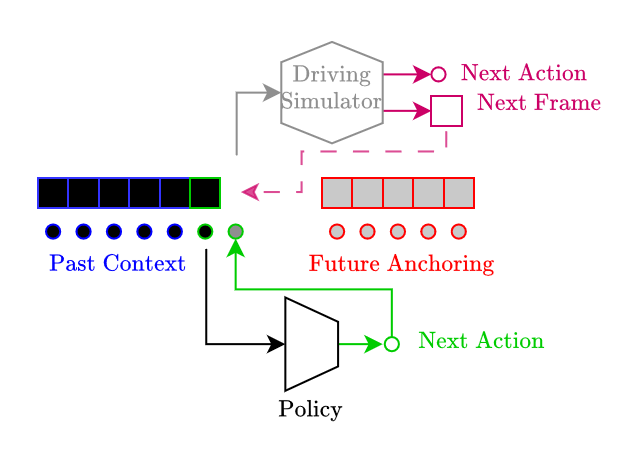
図1：世界モデル・シミュレーションのロールアウトの 1 ステップ。灰色で塗られた図形は世界モデルへの入力である。黒で塗られた図形は方策モデルと世界モデルの両方への入力である（方策モデルは世界モデルそのものであってもよいことに注意）。円は行動（位置と姿勢）、長方形は観測（画像）である。
図中ラベル：Driving Simulator＝運転シミュレータ、Next Action＝次の行動、Next Frame＝次のフレーム、Past Context＝過去のコンテキスト、Future Anchoring＝将来アンカリング、Policy＝方策
\[ \begin{aligned} \pi &: h_T^{\pi} \mapsto p(a_{T+1} \mid h_T^{\pi}), \\ \text{with } h_T^{\pi} &= \Big((o_1, a_1), (o_2, a_2), \ldots, (o_T, a_T)\Big). \end{aligned} \tag{1} \]
行動空間 \(\mathcal{A}\) は、目標旋回曲率と目標縦方向加速度として定義する。観測空間 \(\mathcal{O}\) はカメラ画像の集合のみとして定義する（ビジョンのみの方策）。簡単のため、単一のカメラ（狭視野）からの画像のみを示す。実際には、シーンのより広い部分を捉えるために、広視野と狭視野の 2 台のカメラの画像を用いる。この定式化は、一般性を失うことなく、より多くのカメラを含むように拡張できる。
エキスパートのデモンストレーションのデータセット \(\mathcal{D} = \Big\{\Big((s_1, a_1), \ldots, (s_T, a_T)\Big)\Big\}_{i=1}^{n}\) が与えられる。我々は \(\mathcal{D}\) 内のエキスパートのデモンストレーションをもとに運転方策 \(\pi\) を学習することを目指す。
状態空間 \(\mathcal{S}\) はカメラ画像の集合として定義するが、GPS や IMU データなど他のセンサデータを含めることもできる。本研究では、状態空間をカメラ画像の集合 \(\mathcal{O}\) と、車両の大域的な姿勢推定（位置と姿勢）\(p_t = (x, y, z, \phi, \theta, \psi) \in \mathcal{P} \subset \mathbb{R}^6\) に限定する。
大域的な姿勢は、密結合の GPS／ビジョン Multi-State Constraint Kalman Filter（MSCKF）［14, 17, 26］を用いて得る。
2.2 運転シミュレータ
運転シミュレータを、（i）運転状態生成器（Driving State Generator）と（ii）行動正解ソース（Action Ground Truth Source）から構成されるものとして定義する。
運転状態の生成は、CARLA［6］、MetaDrive［15］などの従来の運転シミュレータに基づくこともできるし、データから学習されるいわゆる世界モデルに基づくこと（第 4 節）や、再投影型の新規視点合成技術に基づくこと（第 3 節）もできる。
行動正解ソースは、運転方策を学習するための教師信号を提供する。データ駆動型の行動正解ソースについては 2.6 節で述べる。
2.3 車両モデル
車両の運動は姿勢の系列 \((p_1, p_2, \ldots, p_T)\) として記述される。シミュレーション内で取られた行動の効果をシミュレートするには、行動に基づいて姿勢を生成する関数が必要である。これを車両モデル（Vehicle Model）と呼ぶ［12］。我々の車両モデルは、車両ダイナミクス、ステアリング応答の遅れ、風など、実世界のさまざまな効果をモデル化するように設計されている。これらの効果をシミュレートすることは、シミュレーションで学習した方策を実世界へ移転するために必要であり、しばしばドメインランダム化（Domain Randomization; sim2real）と呼ばれる［20, 24, 28］。車両モデルを逆に用いることで、姿勢の軌道を実現するのに必要な行動を推定することもできる。
図 1 は、運転シミュレータの 1 ステップに関わるさまざまな構成要素を示している。
2.4 世界モデル
世界モデル \(w\) を、状態と行動の履歴が与えられたときに将来の状態を予測する確率モデルとして定義する。世界モデルを 2.3 節で述べた車両モデルから独立させるため、行動（目標曲率と目標加速度）は車両の姿勢 \((p_1, p_2, \ldots, p_T)\) と車両モデルから暗黙的に導出できるものとみなす。言い換えれば、\(w\) は画像と姿勢の履歴および次の姿勢を、次の画像の分布へ写像する。
\[ \begin{aligned} w &: h_T^{w} \mapsto p(o_T \mid h_T^{w}), \\ \text{with } h_T^{w} &= \Big((p_1, o_1), (p_2, o_2) \ldots, (p_T,)\Big). \end{aligned} \tag{2} \]
世界モデルの遷移信号として姿勢を用いることで、世界モデルを再学習することなく車両モデルのパラメータを拡張（augment）できることに注意されたい。
2.5 将来アンカリング型世界モデル
［2］と同様に、\(F = (f_s, f_e)\) でパラメータ化された将来の観測と行動を条件とする非因果的な世界モデルを学習することができる。ここで \(f_s\) は将来ホライズンの開始、\(f_e\) は将来ホライズンの終了であり、\(f_s \gt T\) である。このモデルはオフラインでしか使えないが、\(F\) における目標状態へ収束する、人間らしい運転映像系列と軌道を予測できるという利点がある。我々はこれを回復圧力（recovery pressure）と呼ぶ。
\[ \begin{aligned} w &: h_{T,F}^{w} \mapsto p(o_T \mid h_{T,F}^{w}), \\ \text{with } h_{T,F}^{w} &= \Big((p_{f_s}, o_{f_s}), \ldots, (p_{f_e}, o_{f_e}), \\ &\qquad (p_1, o_1), (p_2, o_2), \ldots, (p_T,)\Big). \end{aligned} \tag{3} \]
2.6 運転の正解
時刻 \(T\) における行動正解（Action Ground Truth）とは、過去の観測と方策自身がこれまでに取った過去の行動が与えられたときに、方策が取るべき行動 \(a_T \mid h_T\) であって、良好な運転挙動をもたらすものを指す。
この正解を生成するために、将来アンカリング型世界モデルを、観測と姿勢の履歴および将来アンカリングが与えられたもとで次の姿勢または姿勢の軌道 \(\mathcal{T}\) も予測する（\(\mathcal{T} \mid h_{T,F}\)）ように学習する。このモードで動作するとき、世界モデルをプランモデル（Plan Model）と呼び、予測された軌道は車両モデルを用いて正解行動へと写像できる。
将来アンカリングは、シミュレーションの現在の状態にかかわらず、望ましい目標状態 \(F\) へ収束する軌道をプランモデルが生成できるようにするために不可欠である。これがないと、悪い状態にあるときにプランモデルは回復圧力を示さない。
プランモデルは別個のモデルにすることもできるが、共有表現を活用するために世界モデルと同時に学習することが多い点に注意されたい。また、プランモデルはシミュレータで使われる状態生成手法とは独立に利用することもできる。すなわち、再投影シミュレーションとも学習済み世界モデルとも組み合わせて使える。
3 再投影シミュレーション
密な深度マップ \(d_T\)、姿勢 \(p_T\)、画像 \(o_T\) が与えられたとき、深度マップ内の 3 次元点を新しい姿勢 \(p'_T\) へ再投影することで、新しい画像 \(o'_T\) をレンダリングできる。この処理を再投影シミュレーション（Reprojective Simulation）と呼ぶ。実際には、画像と深度マップの履歴を用いて画像を再投影し、欠損領域をインペインティングすることができる。例を図 2 に示す。
3.1 再投影シミュレーションの限界
再投影シミュレーションの限界のいくつかを挙げる。
静的シーンの仮定：この定式化はシーンが静的であり \(p_T\) に依存しないと仮定しているが、通常そうではない。例えば、隣の車に向かって急にハンドルを切れば、その車のドライバーが反応するかもしれない。我々はこの問題を反実仮想問題（counterfactual problem）と呼ぶ。
深度推定の不正確さ：深度マップ \(d_T\) は通常ノイズが多く不正確であり、そのため再投影画像 \(o'_T\) にアーティファクトが生じる。
オクルージョン：\(o_T\) で遮蔽されている領域は \(o'_T\) ではインペインティングされなければならないが、これは困難なタスクであり、これも再投影画像にアーティファクトをもたらす。
反射と照明：定義上、再投影シミュレーションは光輸送の物理を無視する。レイトレーシングやそれと同等の照明モデルがなければ、再投影は表面がどこにあるかは分かっても、新しい角度から見たときに光がそれらの表面とどう相互作用するかは分からない。これは夜間の運転シーンにとって大きな制約であり、図 3 に示すように、再投影画像に目立つ照明アーティファクトを生じさせる。
範囲の制限：\(p'_T\) が \(p_T\) から離れるほど、アーティファクトは顕著になる。アーティファクトを抑えるには、シミュレーションの範囲を小さな値（通常は並進で 4m 未満）に制限する必要があり、これは特に縦方向の運動にとって大きな制約となる。
アーティファクトが \(p'_T - p_T\) と相関する：再投影画像のアーティファクトは、姿勢 \(p'_T\) と \(p_T\) の差と相関している。この相関が方策によって将来の行動を予測するために利用されてしまうが、これは望ましくない。我々はこれをカンニング（cheating）またはショートカット学習（shortcut learning）［9］と呼ぶ。
4 世界モデル・シミュレーション
世界モデル・シミュレータは、将来アンカリング型世界モデル兼プランモデルである。
4.1 ビデオエンコーダ
事前学習済みの Stable Diffusion の画像 VAE［23］を用いる。より具体的には vae-ft-mse-840000-ema-pruned であり、圧縮率は \(8 \times 8\)、画像あたりの潜在チャネル数は 4 である。簡単のため、本節では VAE トークナイザによるカメラ画像の潜在表現も同じく \(o\) で表す。
4.2 Diffusion Transformer
4.2.1 アーキテクチャ
Diffusion Transformer（DiT）アーキテクチャ［19］を用い、入出力のパッチ化テーブルを 3 次元テーブルに拡張したうえで、Transformer ブロックの前に 3 次元すべてを平坦化することで、3 次元入力に対応させる。
［3］と同様に、車両の姿勢、世界タイムステップ、拡散ノイズタイムステップを Diffusion Transformer の条件付け信号として用いる。条件付け信号の埋め込みは合計され、適応的レイヤー正規化層（Adaptive Layer Norm; AdaLN）［32］に渡される。AdaLN 層は、時間次元に沿って異なる条件付けベクトルを扱えるように変更されている。
さらに、注意機構の層ではブロック単位（フレーム単位）の三角因果マスクを用いる。すなわち、クエリトークンは系列内の同じフレームまたはそれ以前のフレームの（キー、バリュー）トークンにのみ注意を向けることができる。将来の観測と将来の姿勢が入力系列の先頭に付加されるため、これによってモデルが物理的に因果的になるわけではないことに注意されたい。しかし、このマスクは推論時にキー・バリュー・キャッシュ（kv-caching）を用いるために必要であり、kv-caching は効率的なサンプリングに不可欠である。
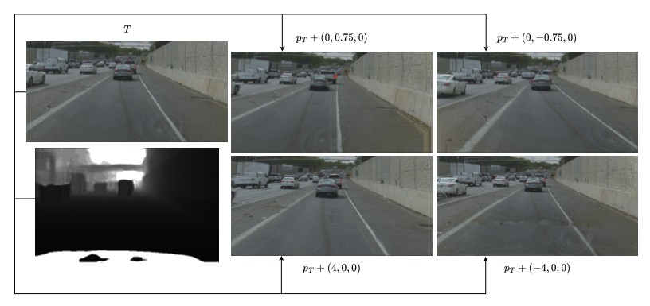
図2：左：上は時刻 \(T\) の画像、下は時刻 \(T\) の深度マップ。右：4 つの異なる並進ベクトルを用いた時刻 \(T\) の再投影画像。
図中ラベル：\(p_T + (0, 0.75, 0)\) などは、元の姿勢 \(p_T\) に加えた並進ベクトルを示す。
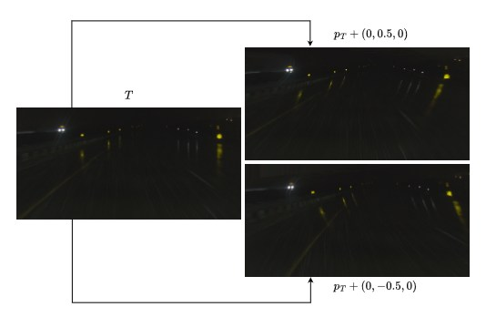
図3：左：時刻 \(T\) の画像。右：時刻 \(T\) の再投影画像。再投影画像における照明アーティファクトに注目されたい。
これをプランモデルにするために、Transformer には残差フィードフォワード・ブロックを積み重ねたプランヘッド（Plan Head）が備えられる。プランヘッドは軌道 \(\mathcal{T}\) を予測する。
4.2.2 学習目的
条件付き Diffusion Transformer の学習には Rectified Flow（RF）の目的関数［16］を採用する。簡単のため、以下の式では世界タイムステップを表す添え字 \(T\) と \(F\) を省略する。ノイズタイムステップ \(\tau \sim \text{Logit-Normal}(0.0, 1.0)\)［8］をサンプリングし、式 4 を用いて観測 \(o\) にノイズを加える。
\[ o_\tau = \tau\epsilon + (1 - \tau)o \tag{4} \]
プランヘッドの出力 \(\mathcal{T}\) には、5 つの仮説を用いる多仮説プランニング損失（Multi-hypothesis Planning loss; MHP）［5］を用いる。各仮説は、ラプラス事前分布を用いた不均一分散の負の対数尤度（Negative Log Likelihood; NLL）損失［18］で学習される。
全損失 \(\mathcal{L}\) は、式 5 に示すように、Rectified Flow 損失 \(\mathcal{L}_{\text{RF}}\) と MHP 損失 \(\mathcal{L}_{\mathcal{T}}\) をハイパーパラメータ \(\alpha =\) で重み付けした和である。（訳注：原文では \(\alpha\) の値が記載されておらず「α = as described」と途切れている。）
\[ \begin{aligned} \mathcal{L} &= \mathcal{L}_{\text{RF}} + \alpha\, \mathcal{L}_{\mathcal{T}} \\ \text{where}\quad \mathcal{L}_{\text{RF}}(o, p, \epsilon, \tau) &= \lVert w(o_\tau, p, \tau) - (o - \epsilon) \rVert^2 \\ \mathcal{L}_{\mathcal{T}}(o, p, \epsilon, \tau) &= \text{MHP}(w(o_\tau, p, \tau), \mathcal{T}) \end{aligned} \tag{5} \]
4.3 逐次サンプリング
各世界タイムステップ \(T\) において、15 ステップ \(\Delta\tau = 1/15\) の単純なオイラー離散化を用いて次の潜在変数 \(\tilde{o}_T\) をサンプリングする。サンプリング過程は式 6 に従う。コンテキストの潜在変数 \((o_{f_s}, \ldots, o_{f_e}, o_1, \ldots, o_{T-1})\) にはいずれもノイズを加えず、それらのタイムステップではモデルへの入力として \(\tau = 0\) を用いる。車両位置 \(p_T\) は、4.6 節で述べるように、世界モデル自身のプランヘッドから、方策から、正解軌道から、あるいは人工的に作成してサンプリングできる。
\[ \tilde{o}_{\tau+\Delta\tau} = \Delta\tau\, w(\tilde{o}_\tau, p, \tau + \Delta\tau) + \tilde{o}_\tau \tag{6} \]
次のタイムステップ \(T+1\) では、コンテキストの潜在変数を 1 タイムステップずらし、サンプリングした潜在変数 \(\tilde{o}_T\) をコンテキストの潜在変数 \((o_{f_s}, \ldots, o_{f_e}, o_2, \ldots, o_{T-1}, \tilde{o}_T)\) に追加する。この過程を将来ホライズン \(f_e\) に到達するまで繰り返す。
4.4 ノイズレベル拡張
いわゆる「自己回帰ドリフト（auto-regressive drift）」［29］、すなわち逐次サンプリング過程における誤差がフレームごとに複合的に蓄積する現象に対してモデルを頑健にするため、ノイズレベル拡張（noise level augmentation）の手法を用いる。
一部の学習サンプル（確率 \(p = 0.3\)）に対して、以下を行う。
- 世界タイムステップ \((1, \ldots, T-1)\) において、異なるノイズレベル \(\tau \sim \text{Logit-Normal}(0.0, 0.25)\) をサンプリングする。
- 将来アンカリングの潜在変数にはノイズを加えない。すなわち世界タイムステップ \((f_s, \ldots, f_e)\) では \(\tau = 0\) とする。
- 世界タイムステップ \(f_s, \ldots, f_e, 1, \ldots T-1\) ではモデルに \(\tau = 0\) を入力する。
- 拡散損失は時刻 \(T\) の潜在変数に対してのみ計算する。
この拡散ノイズレベル拡張は、逐次サンプリング過程で蓄積する誤差に対してモデルを頑健にするうえで不可欠であった。同様の手法は［29］でも提案されているが、我々はノイズレベルを離散化する必要はないと判断した。
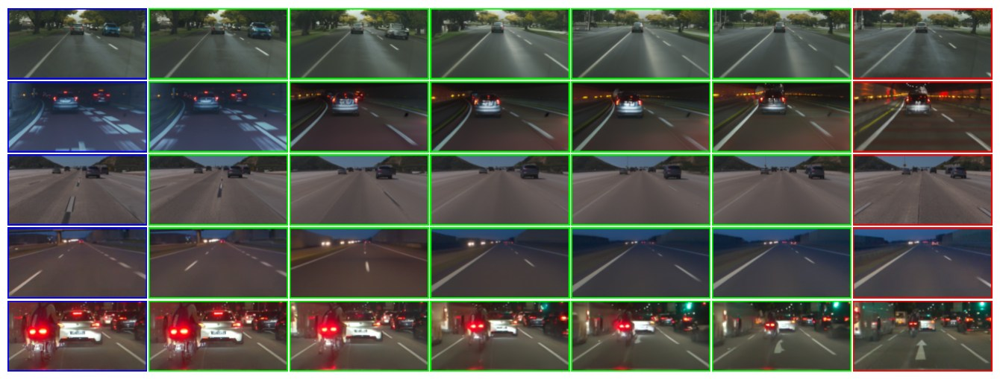
図4：世界モデル・シミュレーションの 5 つの例。青枠のフレームは過去コンテキストの最後のフレーム、赤枠のフレームは将来アンカリングの最初のフレーム、緑枠のフレームはシミュレートされたフレームである。シミュレートされたフレームが、車線変更を実行したり、信号を青に変えたりすることで将来アンカリングに従っていることに注目されたい。
4.5 実装の詳細とデータ
GPT-2 モデル［21］の構成に基づき、gpt（2 億 5,000 万パラメータ）、gpt-medium（5 億パラメータ）、gpt-large（10 億パラメータ）の 3 つのサイズの DiT を学習する。データセットのサイズは 100k、200k、400k セグメントの 3 種類を用い、各セグメントは 1 分間の運転映像と車両姿勢からなる。映像は VAE に入力する前に \(128 \times 256\) ピクセルに縮小する。すべてのデータを 5 Hz にダウンサンプリングする。
データサイズとモデルサイズのスケーリング結果を図 5 に示す。特に断らない限り、以降の実験では 400k セグメントで学習した 5 億パラメータ（500M）の DiT モデルを用いる。
各学習サンプルは次のように構成する。データセットから \(T = 2s\) のコンテキストをサンプリングし、次に世界タイムステップ \(T \lt fs \lt 9s\)、すなわち将来ホライズンの開始をサンプリングする。\(f_e - f_s\) は \(1s\) で一定に保つ。その後、画像の VAE 特徴量と車両姿勢を式 3 に記述したように連結する。
各タイムステップにおいて、軌道 \(\mathcal{T}\) は 10 秒先の将来ホライズンまでの位置、速度、加速度、姿勢角、姿勢角速度の系列として構成される。
世界モデルのロールアウトの例は図 4 を参照されたい。
4.6 世界モデルの評価
画像／映像の品質の指標として、生成画像と正解画像との LPIPS［33］類似度を用いる。
テストセットで測定した VAE 圧縮によるベースラインの LPIPS スコアは LPIPS \(= 0.148\) であり、LPIPS スコアが低いほど生成画像の品質が高いことに注意されたい。
世界モデルが車両位置 \(p_T\) の入力をどれだけ正確に守るかを評価するため、Pose Net を用いて、指令された車両運動と世界モデルが生成した車両運動との誤差を測定する。
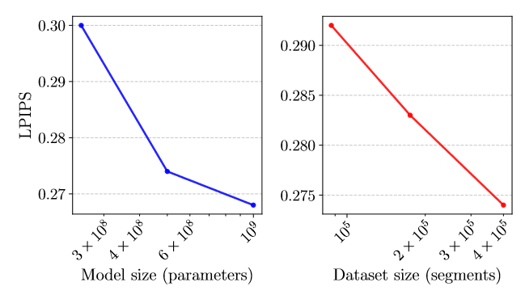
図5：左：400k セグメントで学習した、異なるサイズの DiT モデルの LPIPS。右：5 億パラメータの DiT における、異なるデータセットサイズの LPIPS。いずれも行動 teacher-forced 逐次ロールアウトの設定によるものである。
図中ラベル：Model size (parameters)＝モデルサイズ（パラメータ数）、Dataset size (segments)＝データセットサイズ（セグメント数）
Pose Net は、姿勢、車線境界線、道路端、先行車の位置など、さまざまな出力を予測するように学習された教師ありモデルである。
テストセットのさまざまなセグメントから得た 1,500 回のロールアウトにわたって世界モデルを評価する。世界モデルは複数のモードで動作させることができる。
4.6.1 画像品質
観測と行動を teacher-forcing した次フレーム予測：各世界タイムステップ \(T\) において、（方策からの行動ではなく）正解軌道の行動を用いてフレーム \(\tilde{o}_T\) をサンプリングする。次に、それを次のタイムステップ \(T+1\) のコンテキスト潜在変数に置く前に、正解画像 \(o_T\) で置き換える。このテストの結果を図 6 の左に示す。
| MAE | VAE 圧縮なし | VAE 圧縮あり |
|---|---|---|
| x speed（x 方向速度） | 0.46366 m/s | 0.59390 m/s |
| y speed（y 方向速度） | 0.04216 m/s | 0.04393 m/s |
| z speed（z 方向速度） | 0.04424 m/s | 0.04548 m/s |
| roll rate（ロールレート） | 0.00468 rad/s | 0.00524 rad/s |
| pitch rate（ピッチレート） | 0.00433 rad/s | 0.00453 rad/s |
| yaw rate（ヨーレート） | 0.00211 rad/s | 0.00254 rad/s |
| y lane lines（車線境界線の y 位置） | 0.15852 m | 0.15995 m |
表1：VAE 圧縮していないセグメントと VAE 圧縮したセグメントに対する Pose Net の MAE。
4.6.2 映像品質
行動を teacher-forcing した逐次ロールアウト：ここでは正解軌道の行動を用いてフレーム \(\tilde{o}_T\) をサンプリングし、それを次のタイムステップ \(T+1\) のコンテキスト潜在変数に置く。このモードは、方策からの行動の代わりに正解の行動を用いる点を除けば、世界モデルを通常どおり使うことと等価である。このテストの結果を図 6 の右に示す。
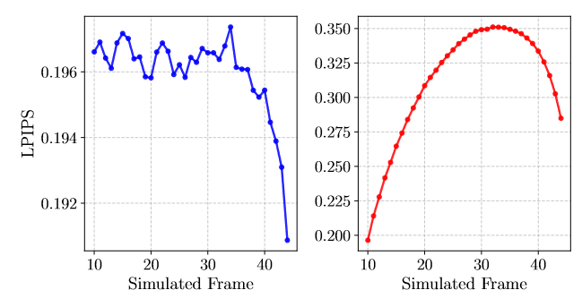
図6：LPIPS。右：観測と行動を teacher-forcing した次フレーム予測（画像品質の評価）、左：行動を teacher-forcing した逐次ロールアウト（映像品質の評価）。（訳注：本文（4.6.1 節・4.6.2 節）では次フレーム予測の結果が左、逐次ロールアウトの結果が右とされており、キャプションの左右の記述と矛盾する。グラフの形状（左はほぼ一定、右は誤差が蓄積して増加）からは本文の記述が正しいと考えられる。）
図中ラベル：Simulated Frame＝シミュレートされたフレーム
4.6.3 姿勢の精度
行動を方策で強制した逐次ロールアウト：ここでは方策 \(\pi\) の行動を用いて次のフレーム \(\tilde{o}_T\) をサンプリングする。これは世界モデルの一般的な動作モードである。方策はいわゆる「ノイズモデル」であってもよい。ノイズモデルの一例は、図 8 に示すように、開始位置から一定距離だけ逸脱する方策である。方策が正解軌道である場合、これは行動を teacher-forcing した逐次ロールアウトと等価であることに注意されたい。
Pose Net で測定した世界モデルの姿勢誤差を図 7 に示す。
また、次のノイズモデルを用いて世界モデルを実行する。ロールアウトの最初の 25 ステップにわたって \(\pm 0.5\)m の滑らかな横方向逸脱を強制し、その後は世界モデルに回復させる。このノイズの例を図 8 に示す。図 9 は、指令した横方向逸脱と、世界モデルがシミュレートした実際の逸脱（Pose Net で測定）を、1,500 回のロールアウトにわたって平均して示したものである。世界モデルは指令された逸脱をシミュレートするが、その全量まではシミュレートしない。
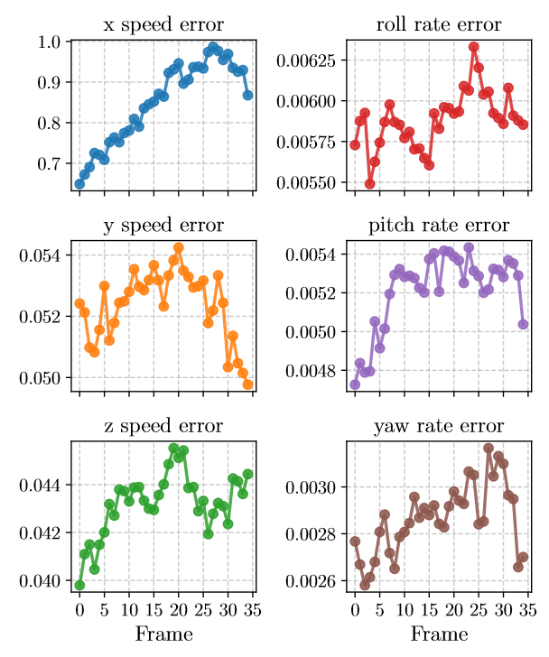
図7：行動を teacher-forcing した逐次ロールアウトにおける姿勢誤差。
図中ラベル：x/y/z speed error＝x/y/z 方向速度の誤差、roll/pitch/yaw rate error＝ロール／ピッチ／ヨーレートの誤差、Frame＝フレーム
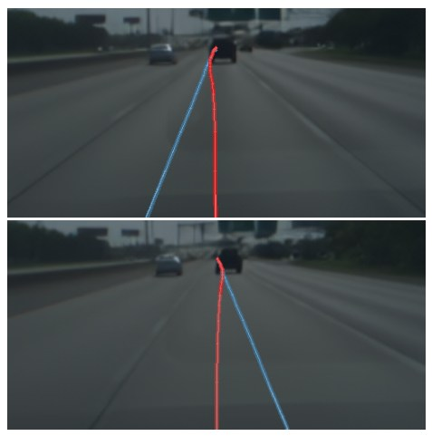
図8：行動をノイズで強制した逐次ロールアウト。シミュレーションの 25 ステップにわたって \(\pm 0.5\)m の滑らかな横方向逸脱を強制する。上はステップ 25 における右への逸脱、下は左への逸脱を示している。
5 運転方策の学習
運転方策 \(\pi\) は 2 つのニューラルネットワークを積み重ねたものである。
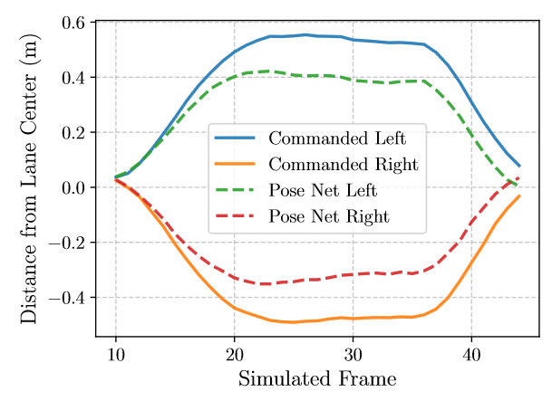
図9：ノイズで強制したシミュレーションにおける車線中心からの逸脱。破線は Pose Net で測定した逸脱、実線は指令した逸脱を示す。
図中ラベル：Distance from Lane Center (m)＝車線中心からの距離（m）、Simulated Frame＝シミュレートされたフレーム、Commanded Left／Right＝指令（左／右）、Pose Net Left／Right＝Pose Net による測定（左／右）
1 つ目は FastViT アーキテクチャ［30］に基づく教師ありの特徴抽出器であり、車線境界線、道路端、先行車情報、自車の将来軌道など、さまざまな出力を予測するように学習される。車線境界線と道路端の出力は可視化に用いられるだけで、ステアリング方策の一部として使われることは決してない点に注意されたい。
2 つ目は小規模な Transformer［31］ベースの時系列モデルであり、特徴抽出器と同じ出力に加えて、次の行動（目標曲率と目標加速度）を予測する。時系列モデルの入力は、直近 2 秒間にわたる（凍結された）FastViT 抽出器の特徴量である。
世界モデルのプランヘッドと同様に、運転方策の軌道出力は 5 つの仮説とラプラス事前分布を用いた MHP 損失で学習される。その他の出力は、ラプラス事前分布を用いた NLL 損失で学習される。
方策の時系列モデル部分を学習するための 2 つの異なるアプローチ、すなわちオフポリシー学習（Off-Policy Learning）とオンポリシー学習（On-Policy Learning）を区別する。オフポリシー学習とは、収集されたエキスパートのデモンストレーションのデータセットに対して教師あり学習を行うことを指す。これは模倣学習としても知られている。オンポリシー学習については 5.1 節で述べる。
5.1 オンポリシー学習
時系列モデルは運転シミュレータを用いて学習され、方策の学習サンプルは方策自身と環境との相互作用から得られる。我々は IMPALA［7］と同様のアーキテクチャを採用しており、並列に動作する複数のアクターが経験を生成し、それを中央の学習器（learner）に送る。学習器は方策を更新し、パラメータサーバを用いて新しいバージョンをアクターに送る。
これらの経験（ロールアウトとも呼ぶ）は次の形式の系列である。
\[ \begin{aligned} h^{\pi,wp} = \Big(&(o_1, a_1, \hat{a}_1^{wp}), (o_2, a_2, \hat{a}_2^{wp}), \ldots, \\ &(o_{f_s}, a_{f_s} \hat{a}_{f_s}^{wp})\Big), \end{aligned} \tag{7} \]
ここで \(\hat{a}^{wp}\) は、ロールアウト中に（プランを備えた）将来アンカリング型世界モデル \(wp\) から導出された行動である。
各タイムステップ \(T\) において、アクターは、ロールアウト開始時点でパラメータサーバにある最新の方策 \(\pi\) からサンプリングした行動 \(a_T\) を取る。運転シミュレータは、世界の状態と指令された行動が与えられたもとで観測 \(o_T\) を生成する。シミュレータは \(wp\) 自身でも、別の世界モデル \(w\) でも、任意の運転シミュレータでもよい。
ロールアウトは将来ホライズン \(f_s\) に到達した時点で終了し、その後学習器に送られる。
学習器は写像 \(\pi : h_T^{\pi} \mapsto p(\hat{a}_T^{w} \mid h_T^{\pi})\) を最適化する。すなわち、方策は履歴 \(h_T^{\pi}\) が与えられたときに世界モデルが取るであろう行動を予測するように学習する。
方策が実世界のさまざまな効果に対して頑健であるようにするには、2.3 節で述べた車両モデルが、学習中に行動応答の複雑な分布をモデル化しなければならない。
5.2 情報ボトルネック
3.1 節で述べたシミュレータ固有のアーティファクトを方策が悪用するのを防ぐため、特徴抽出器が出力できる情報量をおよそ 700 ビットに制限することで、特徴抽出器を正則化する。この制限は学習中に白色ガウスノイズを加えることで課す。このボトルネックは、サンプルあたりの情報容量が \(\frac{1}{2}\log(1 + \text{SNR})\) のガウス通信路として解釈できる。このボトルネックは Gaussian Dropout［22］に似ているが、Gaussian Dropout は加法的ノイズではなく乗法的ノイズを用いる。
5.3 方策評価スイート
我々は方策の横方向の運転性能、すなわち人間らしい車線内位置を維持するよう正確かつ滑らかに操舵する能力と、さまざまな条件下で車線変更を成功裏に実行する能力の評価に焦点を当てる。一般性を失うことなく、縦方向の指標やテストも同様に組み込むことができ、それらは今後の課題である。
5.3.1 シミュレーションによるオンポリシー単体テスト
MetaDrive シミュレータ［15］を用いて方策を閉ループで評価する。レンダリング例は図 10 を参照されたい。方策が合格すべき単体テストの集合を定義する。
直線路とカーブでの車線中心への収束テスト（24 シナリオ）：開始条件に小さなオフセットがあっても、方策が車線内の良好な位置に収束するかどうかをテストする。車線内の位置は中央である必要はなく、人間のドライバーが収束するような位置であればよいことに注意されたい。図 11 の左を参照されたい。
車線変更完了テスト（20 シナリオ）：車線内の開始条件に小さなオフセットがあっても、方策が車線変更操作を完了できるかどうかをテストする。学習中は車線変更の前に条件付けインパルスを加え、推論時にも同じインパルスを入力して車線変更を発動させる。図 11 の右を参照されたい。
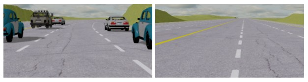
図10：MetaDrive でシミュレートした単体テストシナリオの例。
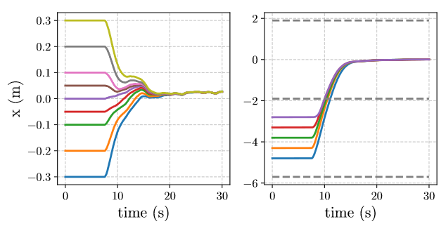
図11：左：車線中心への収束テストの結果。右：車線変更完了テストの結果。
図中ラベル：time (s)＝時間（秒）、x (m)＝横方向位置 x（m）
5.3.2 オフポリシー評価
データセットから 1,500 セグメントのホールドアウト集合を用いる。これらのセグメント上で各タイムステップに方策を実行してさまざまな指標を計算することにより、方策をオフポリシーで評価する。簡単のため、軌道全体の MAE のみを報告する。
5.3.3 実環境での評価
方策を openpilot1 に展開してユーザからデータを収集することで、実環境（in the field）で方策を評価する。openpilot は、多種多様な市販車両に対応するオープンソースの ADAS である。ここで述べる End-to-End 方策は車両のステアリング操作を直接制御し、システムが作動しているときに連続的な自動操舵を提供する。縦方向の行動は古典的な ACC（Adaptive Cruise Control）方策によって制御され、これは先行車検出とレーダーを用いて他車に対して減速し、巡航速度を維持する。
5.4 結果
3 種類の方策を評価する。オフポリシーで学習したもの、再投影シミュレータを用いてオンポリシーで学習したもの、世界モデル・シミュレータを用いてオンポリシーで学習したものである。結果を表 2 に示す。オフポリシーで学習した方策は、オフポリシーの精度評価ではより良い性能を示すにもかかわらず、オンポリシーのテストでは失敗することがはっきりと分かる。
| Off-policy（オフポリシー） | Reprojective（再投影） | World Model（世界モデル） | |
|---|---|---|---|
| MetaDrive 車線中心（lane center） | 5/24 | 24/24 | 24/24 |
| MetaDrive 車線変更（lane change） | 8/20 | 20/20 | 19/20 |
| オフポリシー軌道 MAE | 0.361 | 0.369 | 0.394 |
表2：異なる条件で学習した運転方策の、MetaDrive シミュレータ上での性能とオフポリシー精度評価。
| Reprojective（再投影） | World Model（世界モデル） | |
|---|---|---|
| トリップ数（Number of trips） | 47,047 | 40,026 |
| 作動率 %（時間） | 27.63% | 29.92% |
| 作動率 %（距離） | 48.10% | 52.49% |
表3：学習した運転方策の実環境での性能。
どちらのオンポリシー学習手法も、openpilot において実世界への展開に成功している。表 3 は、500 人のユーザからなるコホートの約 2 か月間の運転から収集した利用指標を示している。openpilot は解除（disengagement）が想定されるレベル 2 のシステムであるため、システムが作動していた時間と距離の割合を主要な指標として用いる。これらの結果は、どちらの方策も実世界の条件下で意味のある運転支援を提供できることを示している。
6 結論と今後の課題
本研究では、実際の人間の運転データに基づくデータ駆動型シミュレータ内で、運転方策をオンポリシーで学習するためのアーキテクチャを提案した。このシミュレータは、実際の人間の運転データに基づいて入力画像と行動の正解の両方を生成する。我々は 2 種類のシミュレーション戦略、すなわちより従来型の再投影シミュレータを用いるものと、世界モデルを用いるものを提案した。
これらの学習戦略によって得られた運転方策が、学習中に人手で設計した挙動を一切用いることなく、我々のテストスイートにおいて基本的な運転挙動を学習することを示した。また、これらの方策が、実世界で運転を支援する有用な ADAS 製品を実現するために使えることも示した。
再投影シミュレーションの限界と、世界モデル戦略がデータと計算量に応じてスケールし続け、より良い運転方策を生み出すと我々が期待する理由について論じた。本研究は横方向の運転方策に焦点を当てているが、すべての手法は縦方向の方策にも一般化できる。今後の研究では、これらの手法で学習した End-to-End の縦方向方策を用いて、有用な ADAS 製品を実証することを期待している。
参考文献
参考文献は原文のまま掲載した。
- Michael Bain and Claude Sammut. A framework for behavioural cloning. In Machine intelligence 15, pages 103–129, 1995.
- Bowen Baker, Ilge Akkaya, Peter Zhokov, Joost Huizinga, Jie Tang, Adrien Ecoffet, Brandon Houghton, Raul Sampedro, and Jeff Clune. Video pretraining (vpt): Learning to act by watching unlabeled online videos. Advances in Neural Information Processing Systems, 35:24639–24654, 2022.
- Amir Bar, Gaoyue Zhou, Danny Tran, Trevor Darrell, and Yann LeCun. Navigation world models, 2024.
- Mariusz Bojarski, Davide Del Testa, Daniel Dworakowski, Bernhard Firner, Beat Flepp, Prasoon Goyal, Lawrence D Jackel, Mathew Monfort, Urs Muller, Jiakai Zhang, et al. End to end learning for self-driving cars. arXiv preprint arXiv:1604.07316, 2016.
- Henggang Cui, Vladan Radosavljevic, Fang-Chieh Chou, Tsung-Han Lin, Thi Nguyen, Tzu-Kuo Huang, Jeff Schneider, and Nemanja Djuric. Multimodal trajectory predictions for autonomous driving using deep convolutional networks. In 2019 international conference on robotics and automation (icra), pages 2090–2096. IEEE, 2019.
- Alexey Dosovitskiy, German Ros, Felipe Codevilla, Antonio Lopez, and Vladlen Koltun. CARLA: An open urban driving simulator. In Proceedings of the 1st Annual Conference on Robot Learning, pages 1–16, 2017.
- Lasse Espeholt, Hubert Soyer, Remi Munos, Karen Simonyan, Vlad Mnih, Tom Ward, Yotam Doron, Vlad Firoiu, Tim Harley, Iain Dunning, et al. Impala: Scalable distributed deep-rl with importance weighted actor-learner architectures. In International conference on machine learning, pages 1407–1416. PMLR, 2018.
- Patrick Esser, Sumith Kulal, Andreas Blattmann, Rahim Entezari, Jonas Müller, Harry Saini, Yam Levi, Dominik Lorenz, Axel Sauer, Frederic Boesel, Dustin Podell, Tim Dockhorn, Zion English, and Robin Rombach. Scaling rectified flow transformers for high-resolution image synthesis. In Proceedings of the 41st International Conference on Machine Learning. JMLR.org, 2024.
- Robert Geirhos, Jörn-Henrik Jacobsen, Claudio Michaelis, Richard Zemel, Wieland Brendel, Matthias Bethge, and Felix A Wichmann. Shortcut learning in deep neural networks. Nature Machine Intelligence, 2(11):665–673, 2020.
- David Ha and Jürgen Schmidhuber. Recurrent world models facilitate policy evolution. In Advances in Neural Information Processing Systems 31, pages 2451–2463. Curran Associates, Inc., 2018. https://worldmodels.github.io.
- Anthony Hu, Lloyd Russell, Hudson Yeo, Zak Murez, George Fedoseev, Alex Kendall, Jamie Shotton, and Gianluca Corrado. Gaia-1: A generative world model for autonomous driving, 2023.
- Reza N Jazar. Vehicle dynamics. Springer, 2008.
- Alex Kendall, Jeffrey Hawke, David Janz, Przemyslaw Mazur, Daniele Reda, John-Mark Allen, Vinh-Dieu Lam, Alex Bewley, and Amar Shah. Learning to drive in a day. In 2019 international conference on robotics and automation (ICRA), pages 8248–8254. IEEE, 2019.
- Mingyang Li and Anastasios I. Mourikis. High-precision, consistent ekf-based visual-inertial odometry. The International Journal of Robotics Research, 32(6):690–711, 2013.
- Quanyi Li, Zhenghao Peng, Lan Feng, Qihang Zhang, Zhenghai Xue, and Bolei Zhou. Metadrive: Composing diverse driving scenarios for generalizable reinforcement learning. IEEE Transactions on Pattern Analysis and Machine Intelligence, 2022.
- Xingchao Liu, Chengyue Gong, and Qiang Liu. Flow straight and fast: Learning to generate and transfer data with rectified flow. arXiv preprint arXiv:2209.03003, 2022.
- Anastasios I. Mourikis and Stergios I. Roumeliotis. A multi-state constraint kalman filter for vision-aided inertial navigation. In Proceedings 2007 IEEE International Conference on Robotics and Automation, pages 3565–3572, 2007.
- David A Nix and Andreas S Weigend. Estimating the mean and variance of the target probability distribution. In Proceedings of 1994 ieee international conference on neural networks (ICNN'94), pages 55–60. IEEE, 1994.
- William Peebles and Saining Xie. Scalable diffusion models with transformers. In Proceedings of the IEEE/CVF international conference on computer vision, pages 4195–4205, 2023.
- Xue Bin Peng, Marcin Andrychowicz, Wojciech Zaremba, and Pieter Abbeel. Sim-to-real transfer of robotic control with dynamics randomization. In 2018 IEEE International Conference on Robotics and Automation (ICRA), pages 3803–3810, 2018.
- Alec Radford, Jeffrey Wu, Rewon Child, David Luan, Dario Amodei, Ilya Sutskever, et al. Language models are unsupervised multitask learners. OpenAI blog, 1(8):9, 2019.
- Mélanie Rey and Andriy Mnih. Gaussian dropout as an information bottleneck layer. In NeurIPS Workshop on Bayesian Deep Learning, 2021.
- Robin Rombach, Andreas Blattmann, Dominik Lorenz, Patrick Esser, and Björn Ommer. High-resolution image synthesis with latent diffusion models. In Proceedings of the IEEE/CVF conference on computer vision and pattern recognition, pages 10684–10695, 2022.
- Fereshteh Sadeghi and Sergey Levine. CAD2RL: real single-image flight without a single real image. In Robotics: Science and Systems XIII, Massachusetts Institute of Technology, Cambridge, Massachusetts, USA, July 12-16, 2017, 2017.
- Eder Santana and George Hotz. Learning a driving simulator, 2016.
- Harald Schafer, Eder Santana, Andrew Haden, and Riccardo Biasini. A commute in data: The comma2k19 dataset, 2018.
- Steven M Seitz and Charles R Dyer. View morphing. In Proceedings of the 23rd annual conference on Computer graphics and interactive techniques, pages 21–30, 1996.
- Josh Tobin, Rachel Fong, Alex Ray, Jonas Schneider, Wojciech Zaremba, and Pieter Abbeel. Domain randomization for transferring deep neural networks from simulation to the real world. In 2017 IEEE/RSJ International Conference on Intelligent Robots and Systems (IROS), pages 23–30, 2017.
- Dani Valevski, Yaniv Leviathan, Moab Arar, and Shlomi Fruchter. Diffusion models are real-time game engines. In The Thirteenth International Conference on Learning Representations, 2025.
- Pavan Kumar Anasosalu Vasu, James Gabriel, Jeff Zhu, Oncel Tuzel, and Anurag Ranjan. Fastvit: A fast hybrid vision transformer using structural reparameterization. In Proceedings of the IEEE/CVF international conference on computer vision, pages 5785–5795, 2023.
- Ashish Vaswani, Noam Shazeer, Niki Parmar, Jakob Uszkoreit, Llion Jones, Aidan N Gomez, Łukasz Kaiser, and Illia Polosukhin. Attention is all you need. Advances in neural information processing systems, 30, 2017.
- Jingjing Xu, Xu Sun, Zhiyuan Zhang, Guangxiang Zhao, and Junyang Lin. Understanding and improving layer normalization. Advances in neural information processing systems, 32, 2019.
- Richard Zhang, Phillip Isola, Alexei A Efros, Eli Shechtman, and Oliver Wang. The unreasonable effectiveness of deep features as a perceptual metric. In Proceedings of the IEEE conference on computer vision and pattern recognition, pages 586–595, 2018.